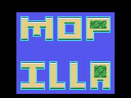

What is not known. This page exists because a disassembly that only reports what went well is indistinguishable from one that is covering up.
The bonus stage map, drawn from the ROM, forms letters out of the scenery's own metatiles: it reads MOP on top and ILLA below.

The geometry is confirmed by the code -twelve metatiles by ten, the cp 00ch and cp 00ah at 0x64CD- so the drawing is faithful: that is what the cartridge paints. What is not known is what it is supposed to say. It is not the title, which the presentation screen spells MOPIRANGER.
The bonus stage still needs playing in the emulator to see how it reads with the objects and sprites on top.
Type 5 alternates two behaviours on the flag at 0xE2D8: either it heads for the first object on the list, or it follows a route from the table at 0x5812, indexed by the high nibble of its own clock. What it does is clear; what has not been measured is whether that fixed route traces a recognisable shape on screen or is just a service path.
The first five (01 04 03 02 05) are loaded into DE by 0x4B27, and the next thirteen are the list of zones with a big razzon. What 0x4B27 does with those five is traced, but it has not been checked in motion that they mean what they look like.
That the loop at 0x41D5 reads fourteen bytes from a list of thirteen is measured, and so is the effect: zone 8 escapes the NO BIG RAZZON notice. What cannot be asserted is whether it is an oversight or deliberate. The binary says what the code does, not what whoever wrote it intended.
At 0x4575 are ten bytes that set up a read from video memory and that nothing jumps to. It has been searched for as the target of call and jp across the whole ROM and as a word in the tables, and it does not appear. It remains possible that it is reached by some path the trace cannot see; none has been found.
machine_info time would answer that with a number.The repository issues are open. A correction with a measurement attached is worth more than ten pages of prose: in this series, several already-published claims have fallen because somebody sat down in front of the game and looked.